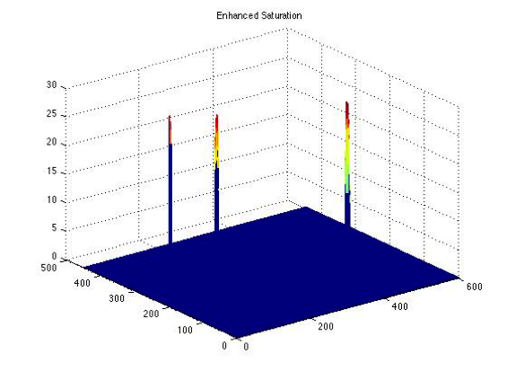
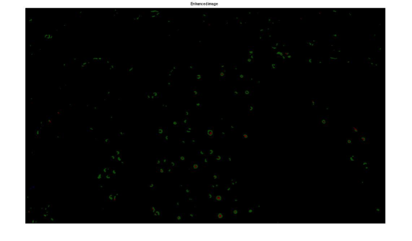

A color outlier algorithm based on the Markov model
In recent years, color outlier techniques become more and more popular to assist the wild search and rescue for the reason that the use of video material captured by unmanned aerial vehicle (UAV) or elevated-mount camera is becoming a common tool.
Previous work
As my first attempt when I try to solve the color outlier problem, I come up with a similar method to the [1] using the histogram because the method proposed by [1] gives me a bright hint. In [1], the HSV color representation is really a good one that involves the variables (hue and saturation) I want to operate. What`s more, it offers me a simple but generative method using center-surround difference model in [2]—similar to the nearest neighbor rule.
Considering all above, now that we know that the outlier is relatively concentrated small to the whole image, thinking as simply as possible, one way to find the outlier is to find the small ratio (occurrence) of the pixels of certain hue to the whole pixels and I then might find the possible area that includes the outlier:
- Convert the regular RGB image to HSV and quantize the values of hue to 360 or 180 quantized levels: $$S= \left\{ s\middle| s=quantized \: level \right\}$$
- Record the numbers of pixels that have the same quantized values of hue, named $N_i$ and calculate the ratio of the numbers to the whole numbers of pixels of this image using formula $(a)$:
$$\frac {N_i}{\sum_{i \in S} N_i} \leq A \qquad(a) $$
- $A$ -certain threshold
- $N_i$ -the number of pixels of certain quantized level in whole image
When the ratio of certain color is no less than A, we could know that the color is common color. Next, we should reduce the saturation of the dominant color to enhance the outlier, but this procedure will make more noise points (small grey points), so we need to set a new threshold B of saturation to eliminate the noise pixels produced by this process and in the original image.
Figure 1: The histogram of hue
-
Intuitively, if we apply this method to whole image, we will choose some unwanted colors that also have the same low occurrence as the outlier but not concentrate in one area. A way to solve this drawback is to divide the whole image to a set of sub-images:
$$M=\left\{m\middle| m=number \: of \: subimages \right\}$$
and record the numbers of pixels of certain hue that have low occurrence in one sub-image. Then, apply to formula $(b)$:
$$\frac {N_j}{\sum_{j \in M} N_j} \geq C \qquad(b) $$
- $C$ -certain threshold
- $N_j$ -the number of pixels of certain quantized level in one sub-image
When the ratio of certain color is no more than C, we might know that this color is not concentrated in a small area, which could be identified as the unwanted color.
Figure 2: Saturation of remaining color
Unfortunately, this method could have all the drawbacks proposed by [1] that cannot provide the location of the outlier and the enhanced image is noisy, so I decide to develop a new method to figure out where the color outlier is and it will be discussed in the following parts.
Problem statement
Assumptions
Figure 2: An example of searching image
From the sample image we could conclude some assumptions about our method.
The color of object of interest is outstanding.
The object of interest has relatively high saturation.
The object of interest is relatively small compare to the entire frame.
The background is reasonably lack of texture.
Typical scenarios: sea, wild.
-
Mathematical Model
I decide to use the components in HSV Color Space, where $H$ is Hue, $S$ is Saturation and $V$ is Value related to brightness and then I treat the image as a Markov random field and it could be characterized by Gibbs joint probability distribution: $$P_r(U_1 = u_1, \dotsc, U_N = u_N) = \frac{1}{Z}\mathrm{e}^{\frac{-E(u_1, \dotsc, u_N)}{\beta}}$$ $$E(u_1, \dotsc, u_N) = \sum_{c \in C} V_c(u_1, \dotsc, u_N)$$
- $Z$ - normalizing constant called partition function
- $\beta$ - natural temperature (constant)
- $c$ - clique (geometric concept)
- $C$ - set of all cliques
- $V_c$ - potential function (algebraic concept)
- $U_i$ - random variable of hue value
According to Gibbs distribution, we could get the prob. $(P_r)$ of each pixel in an image by the formula $(1)$ as below: $$P_r\big( U_{j,i} = q \big| u_{l,k}, (l,k) \in \eta_{j,i} \big) = \mathrm{e}^{\frac{-EU_{j,i}}{\beta}} \qquad (1)$$ $$E(u_1, \dotsc, u_N) = \sum_{c \in C} V_c(u_1, \dotsc, u_N)$$
- $U_{j,i}$ - normalizing constant called partition function
- $\eta_{j.i}$ - natural temperature (constant)
- Assume that $V_c(u_i,u_j) = \sqrt{(u_i-u_j)^2}$and Cliques is second-order neighborhood
$P_r\big( U_{j,i} = q \big| u_{l,k}, (l,k) \in \eta_{j,i} \big)$ is at maximum when the image is a constant-valued random field realization , which means if there is no big difference of hue around the neighbors, the probability of that pixel will be high otherwise low. For this reason we could conclude that the color outlier could be the low prob. point or area
Algorithm
Based on the previous Mathematical model, we could get the prob. of each pixel according to the formula $(1)$ and Hue, and we know that the color outliers might be the pixels that have low prob. and the background is the pixels that have high prob. Therefore, we could use this property of the prob. to enhance our image. Here comes our algorithm that is used for enhance the image and find out where the color outlier is. This algorithm could be describe as:
- Find the prob. of each pixel.
- Enhance the Saturation of the low prob. pixels and reduce the Saturation of the high prob. pixels.
- According to the new Saturation, set Value (Brightness) of the low saturated pixels to zero.
- Noise reduction.
Implementation is as following steps:
- Load image and convert into HSV.
- Extract Hue, Saturation and Value information
- According to formula $(1)$, we could calculate the prob. (called $Pr_{i,j}$ ) of each pixel according to hue value. Say Say Saturation as formula $S_{i,j}$ and operate the saturation by formula $(2)$:
$$ \widetilde S_{i,j} = \alpha S_{i,j}(1-Pr_{i,j}) \qquad (2) $$
- $\widetilde S_{i,j}$ - the enhanced saturation
- $\alpha$ - a large constant for amplifying the saturation
- Set a threshold B to the new saturation. If the $\widetilde S_{i,j} < B$, we set the enhanced Saturation ($\widetilde S_{i,j}$) and Value ($V_{i,j}$) of that pixel located at $(i,j)$ to zero. By this step, the color outlier will have more brightly color that is easier to find.
-
Noise elimination when the image has high texture:
- Median filtering (5x5) the component of Saturation
- Setting new larger threshold to saturation and Value
- Repeat 3-5 times
- Revert to RGB and output the enhanced image (black background and the enhanced color outlier)
When we take the fig.5 below as an example, let us to check the original saturation and enhanced saturation:
Figure 3: Saturation of the original image
Figure 4: Saturation of the enhanced image
Experimental results
Results on the simple artificial images
Results on the complex artificial images
Results on the complex natural images
Figure 5: The image with simple artificial color outlier
Figure 6: The enhanced image with the simple artificial color outlier
These simple artificial color outliers with the high saturation are easy to find and our method seem to work well. And the color outliers in the enhanced image are much brighter (high saturation value in enhanced image as Fig.4 shows) than the ones that are in the original image. For this reason, it is easy for us to figure out where the color outliers are. Next sample image will show us a property of our method that is our method only gives the outbound of the color outlier if the color outlier has large and irregular shape, such as the yellow pins shown in the Fig.7
Figure 7: The image of the artificial color outlier with irregular shape
Figure 8: The enhanced image of the artificial color outlier with irregular shape
From these results, we find that the pixels around the color outlier will be enhanced as well if the color outlier has larger and irregular shape for the reason that the pixels near the color outlier actually have the different hue with the area of the outlier. These pixels will also have the relatively low probability.
Figure 9: The image with more complex artificial color outlier
Figure 10: The enhanced image with more complex artificial color outliere
This sample image came from another team is more difficult because the target object is not as highly saturated as the former one and has other color. What`s more, one of the three colors is very similar to the background. However, since the background is consistent in blue, our method successfully finds that target object.
Figure 9: The images with complex natural color outlier
Figure 10: The enhanced image with with natural color outlier
The algorithm finds all the color outliers in this image that is full of target objects and these objects have mixed color and most of them are white. The result does not seem to be perfect because there is a little noise on the enhanced image. White outlier is the hardest for our method to figure out without any noise for the reason that white point or area always has very low saturation and our method actually set the threshold on the saturation even though we also set a threshold on Value.
Conclusion
- There is no constraint on the shape and we also do need our target object to be very small. However, sometimes the method only gives the outbound of the target.
- My method works well on the images that have relatively highly saturated color outlier especially on the red, purple, orange color, and the more consistent the background color is, the better the result. However, if the color of the target is nearly as same as the background, it might be ignored.
- It is hard to figure out the white and black object without introducing wrong or noisy point. What`s more, the threshold of the saturation need to slightly moderate when the background is messy.
- Another disadvantage is that the complexity of our approach is high. As the size increases, the time needed increases fast.
- I recommend the ones who love hiking or adventuring wear bright and outstanding color outwears in the wild.
Future work
The future improvement of method might come out from the combination of the two methods—the histogram one and the Markov random field (MRF) one. Firstly, we pre-process the image with the sub-block by using the histogram, and then utilizing our MRF model to the processed image will lead to a better results. As for the complexity of our approach, maybe we could use small window to the image instead of scanning every pixel.
Reference
[1] Nathan D. Rasmussen, Daniel R. Thornton, Bryan S. Morse, “Enhancement of Unusual Color in Aerial Video Sequences For Assisting Wilderness Search and Rescue” in Image Processing, 2008. ICIP 2008. 15th IEEE International Conference on 12-15 October 2008
[2] Gunhee Kim, Daniel Huber, and Martial Hebert, “Segmentation of salient regions in outdoor scenes using imagery and 3-Ddata" in WACV 08: Proceedings of the Ninth IEEE Workshop on Applications of Computer Vision. January 2008, IEEE Computer Society.